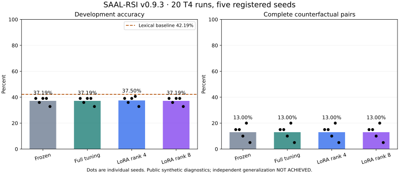

Position-aware Transformer · matched frozen/full/LoRA branches
Independent generalization: NOT ACHIEVED. External deployment prohibited.
All results come from public synthetic recipes. Five initialization seeds measure training variability; they do not establish independent task-family sampling.
| Branch | Seeds | Mean accuracy | Range | Complete-pair accuracy |
|---|---|---|---|---|
| frozen | 5 | 37.19% | 32.81%–39.06% | 13.00% |
| full | 5 | 37.19% | 32.81%–39.06% | 13.00% |
| lora-r4 | 5 | 37.50% | 32.81%–40.62% | 13.00% |
| lora-r8 | 5 | 37.19% | 32.81%–39.06% | 13.00% |
Per-family, per-category, class coverage, counterfactuals and resource measurements are included in the JSON report. Failed and interrupted experiments remain recorded.
